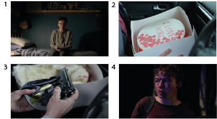

ESCENAS
1. Esta imagen es una de las primeras escenas del capítulo. Cuando Kenny se entera de que había sido grabado por la cámara de su computadora masturbandonse con unas imágenes de internet. Empieza a ser chantajeado por el video y es obligado a entregar su numero de teléfono y obedecer cualquier tarea que le propongan.
2. Esta escena es importante en el capitulo, porque Kenny es obligado a entregar esta torta a Hector, el otro personaje que esta siendo chantajeado, cuando es tan juntos, los hacen romper la torta y buscar lo que esta esocondido adentro.
3. Esta escena pasa a la mitad del capitulo, entrego la torta a Hector, otro persona siendo chantajeado y con el tiene que ir a un banco fuera de la ciudad, cuando llegan al lugar tienen que buscar dentro de la torta un objeto, en la cual encuentran una gorra, unos anteojos y un arma. Kenny tiene que robar un banco y Hector esperarlo afuera para huir.
4. Esta escena es al final del capitúlo, después de robar el banco Kenny se dirigió a una ubicación con la plata, donde se encuentra con Paul, otro hombre siendo chantajeado por lo mismo que Kenny. En él lugar los obligan a pelear hasta la muerte, una vez que gana Kenny se entera que de todas maneras el video había sido enviado a todos sus contactos y se deja capturar por la policía.
